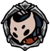

Primal Aspid
 Wilder, ancestral form of the Aspid. Once thought extinct, they have reappeared at the edges of the world.These cruel foes will ambush you and relentlessly attack with their searing venom. How strange that their descendants are so weak. If I have children, I hope they will be stronger than me...
Wilder, ancestral form of the Aspid. Once thought extinct, they have reappeared at the edges of the world.These cruel foes will ambush you and relentlessly attack with their searing venom. How strange that their descendants are so weak. If I have children, I hope they will be stronger than me...

x 6
x 8
 x 25
x 25The Primal Aspid is flying enemy which launches projectiles at the player, acting as a harder version of the Aspid Hunter. It appears in the upper section of Kingdom's Edge.

 The Primal Aspid will float around at medium range, much like an Aspid Hunter.It will periodically spit three damaging globs at the player, which travel in straight lines.The middle blob is always aimed directly at the player, one blob is aimed about 30 degrees to the left, and the last one is aimed about 30 degrees to the right.
The shots of the Primal Aspid are notoriously difficult to dodge, often because they are found in difficult locations with little floor space.The safest and most effective method of dealing with them is to use a Dash Slash which, will kill them in one hit if the player has the Coiled or Pure nail. Ideally, this is charged up before they even notice the player, and executed before they can get a single shot off.Failing this, keep at a distance where you can comfortably dodge their barage, then dash in and deal a hit before backing out. Shadow Dash can be very useful for this method, as you can reliably dodge while closing the distance.
The Primal Aspid will float around at medium range, much like an Aspid Hunter.It will periodically spit three damaging globs at the player, which travel in straight lines.The middle blob is always aimed directly at the player, one blob is aimed about 30 degrees to the left, and the last one is aimed about 30 degrees to the right.
The shots of the Primal Aspid are notoriously difficult to dodge, often because they are found in difficult locations with little floor space.The safest and most effective method of dealing with them is to use a Dash Slash which, will kill them in one hit if the player has the Coiled or Pure nail. Ideally, this is charged up before they even notice the player, and executed before they can get a single shot off.Failing this, keep at a distance where you can comfortably dodge their barage, then dash in and deal a hit before backing out. Shadow Dash can be very useful for this method, as you can reliably dodge while closing the distance.
Primal Aspids can be found the following areas: